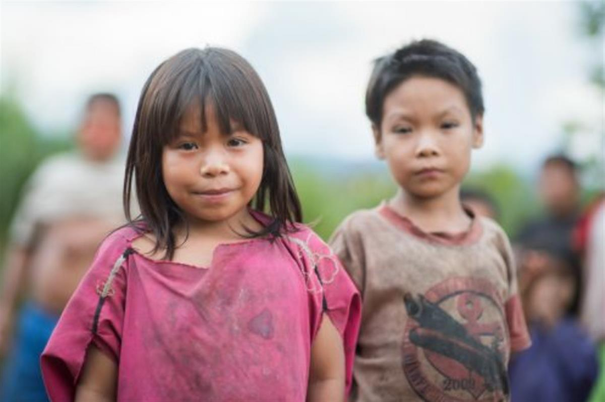
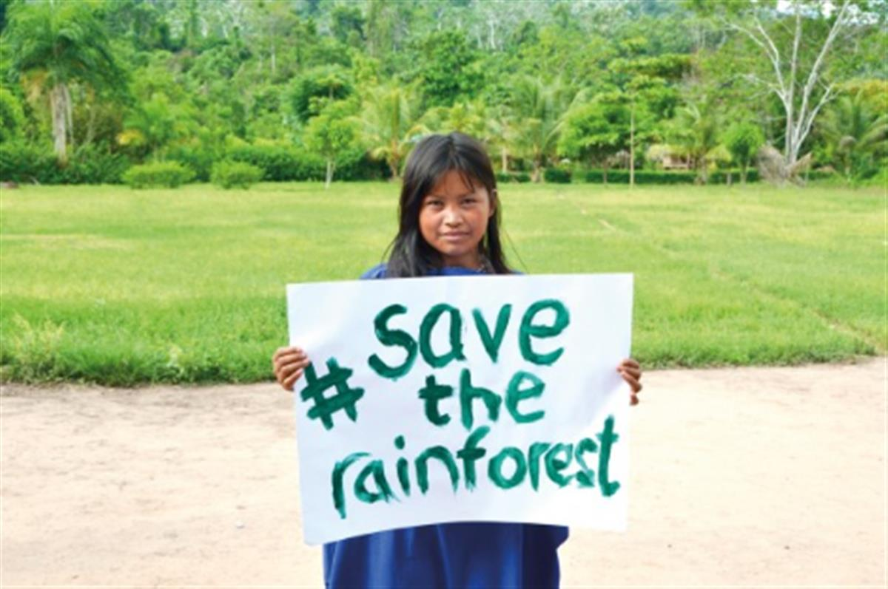
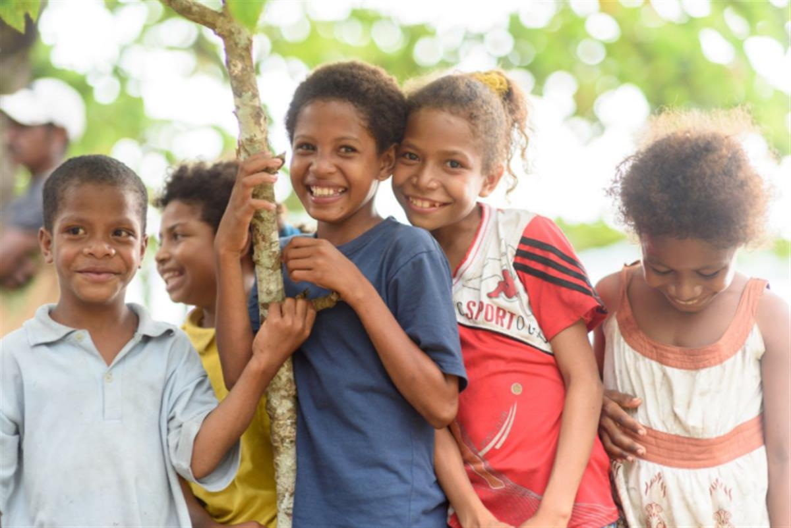
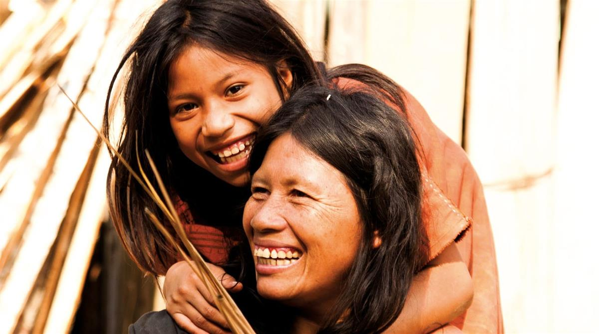
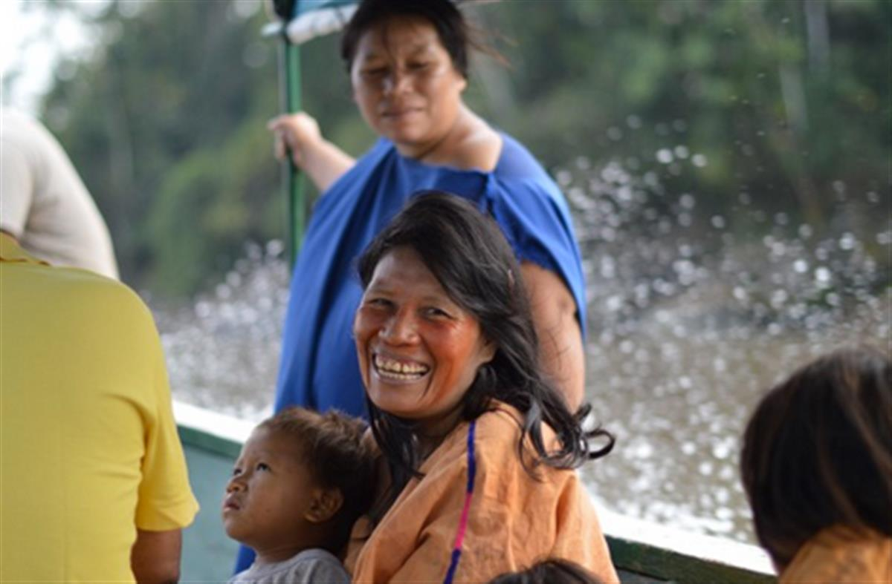
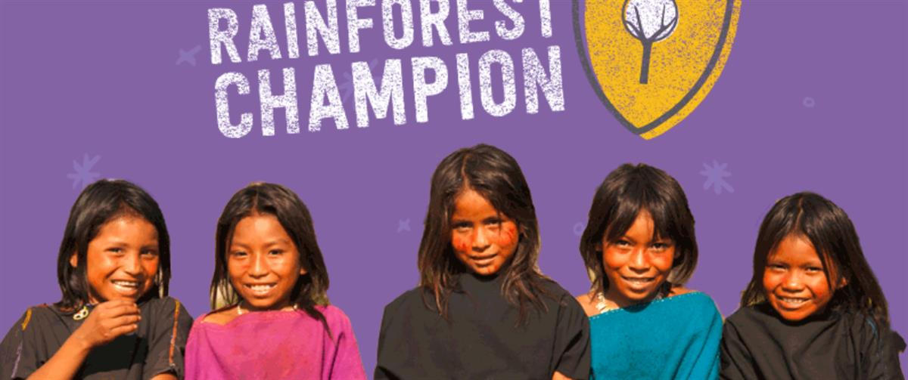

Half the world's rainforest has been lost over the past forty years.
We need a new approach.
The only way to halt destruction is to align the future of the rainforest with the people best placed to protect it. This means placing forest in the hands of the people who rely on its survival for their survival.
Cool Earth does just that.





Cool Earth is the charity that works alongside indigenous villages to halt rainforest destruction.
Half of the world’s rainforest has been destroyed in the last 40 years. And, contrary to the headlines, rainforest continues to be lost at a faster rate than ever.
It's not too late. Cool Earth believes the rainforest can be saved. We just need a new approach.
That’s why we don’t create reserves or put up fences. We don’t buy land. Instead, we put indigenous people back in control of their forest.
Local people stand to lose the most from deforestation but the most to gain from its protection. As such, they are the forest’s best possible custodians. That’s why all Cool Earth partnerships are community-owned and led – an approach that research is continually proving to be the most effective way to keep rainforest standing.
By developing local livelihoods, our mission is to end the cycle of deforestation entrenching villages into further poverty. Creating strong, self-determining communities – not dependency.
We are also the only charity that works solely where the threat to the forest is greatest, on the frontline of deforestation. And each of our partnerships forms a shield to make the neighbouring forest inaccessible to loggers – saving millions of acres of further forest.
